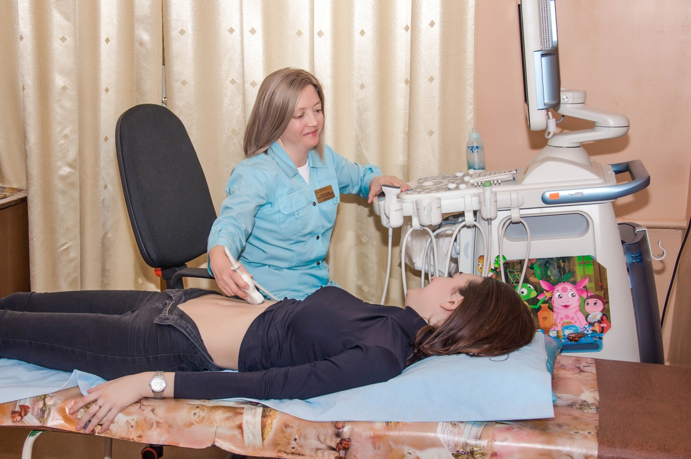

Телефон «Гарячої лінії» КНП «Міська дитяча лікарня №1» ЗМР: 96-20-21
"Міська дитяча лікарня №1" Запорізької міської ради


Телефон «Гарячої лінії» КНП «Міська дитяча лікарня №1» ЗМР: 96-20-21
Лікар ультразвукової діагностики дитячий 1 категорії: Сумарокова Наталія Дмитрівна
Показання для госпіталізації (соматичний профіль):
Стаж роботи: 17 років.
Перелік обстежень:
Медичні сестри:
Пучкова Наталія Михайлівна – сестра медична вищої кваліфікаційної категорії.
Томіліна Алла Іванівна – сестра медична вищої кваліфікаційної категорії.